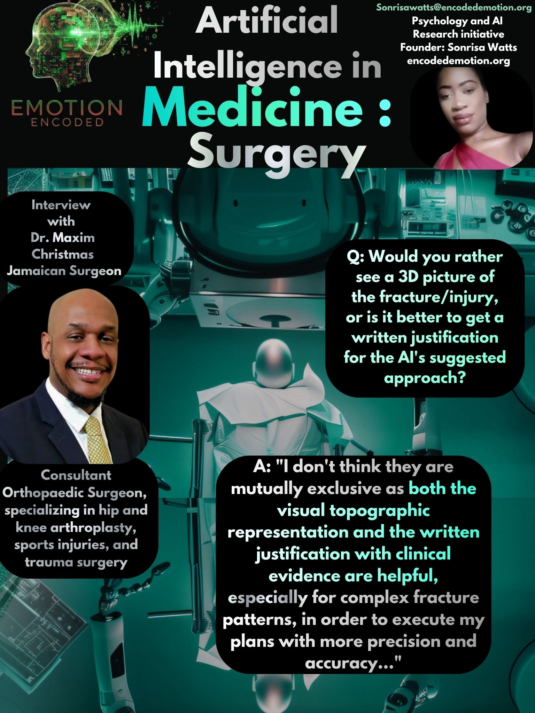

Dr. Christmas is an Orthopaedic Surgeon at the University Hospital of the West Indies, Mona, and a Fellow of the Caribbean College of Surgeons. Driven to deliver high-quality care, he completed extensive postgraduate fellowship training in Melbourne, Australia, specializing in Hip and Knee reconstruction, Shoulder, Elbow, and Limb Lengthening (Ilizarov). I spoke with him to explore how high-level spatial intuition interacts with the digital precision of AI.
Question: When an AI gives advice, would you prefer the AI to show you a visual heatmap (for example) of the anatomy it sees, or would you prefer a comparative chart of similar past cases? Or both?
"I would say both as it allows me to appreciate the information that is guiding the AI's advice and also to see how the advice aligns with clinical scenarios."
Dr. Christmas identifies a critical threshold for trust: Multi-modal justification. In analyzing professional responses, we often see a split between the Visualist (who wants a map to guide their hands) and the Skeptic (who wants the data to prove the logic). By requesting both, Dr. Christmas suggests that for complex cases, a single source of information is insufficient. The visual provides the how, while the comparative data provides the why.
Question: Would you rather see a 3D picture of the fracture/injury, or is it better to get a written justification for the AI's suggested approach?
"I don't think they are mutually exclusive as both the visual topographic representation and the written justification with clinical evidence are helpful, especially for complex fracture patterns, in order to execute my plans with more precision and accuracy."
For a specialist, spatial and logical data are not a zero-sum game. Dr. Christmas rejects the binary choice between a digital model and written evidence. In orthopaedics, where seeing is believing but data is safety, a 3D reconstruction acts as a team player alongside clinical evidence. This hybrid approach allows the surgeon to maintain a higher level of precision than either tool could provide in isolation.
Question: Do you ever worry that a confident explanation from an AI could trick you into forgetting about your gut instinct?
"Not at all. AI for me is an adjunctive tool, not a replacement for my critical analytical skills, so AI doesn't think on my behalf."
Dr. Christmas demonstrates the ideal cognitive framework for avoiding automation bias. He views the AI as a GPS, a tool that offers a route, but never as the driver. By framing AI as an adjunctive tool, he ensures that the machine’s confidence never overrides his own analytical responsibility. The AI provides the data, but the surgeon provides the judgment.
Final Conclusion
The interview with Dr. Christmas reveals that surgical trust is built when AI functions as a transparent partner rather than a black box.
Sonrisa Watts // Emotion Encoded // 2026